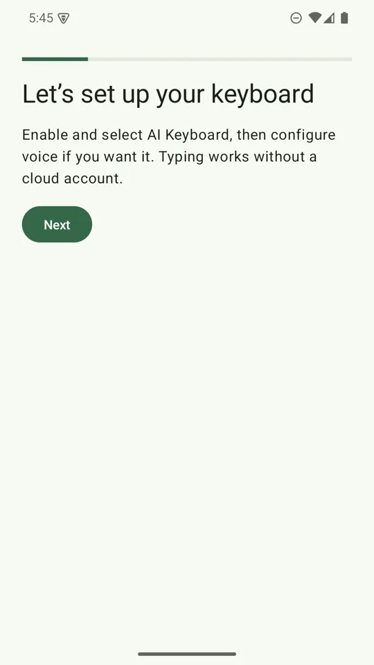
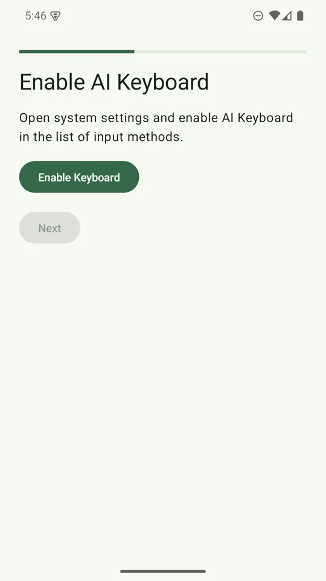
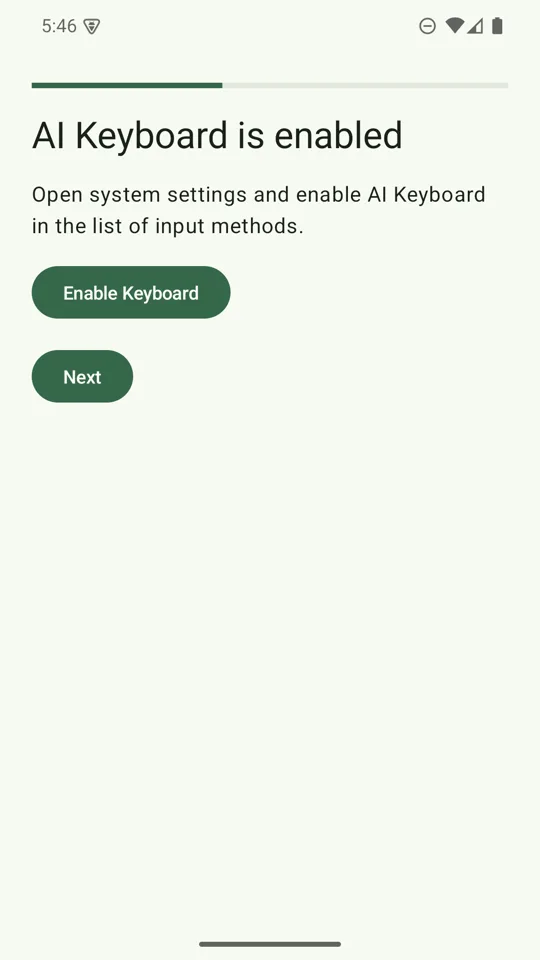
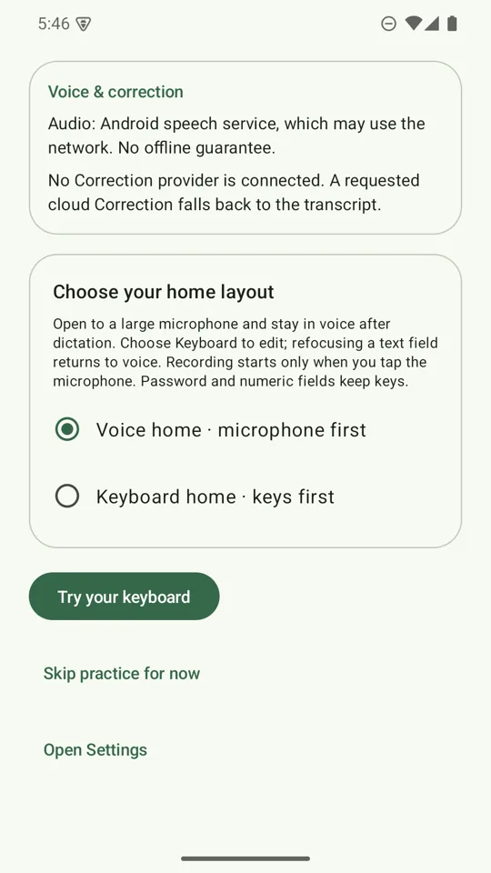
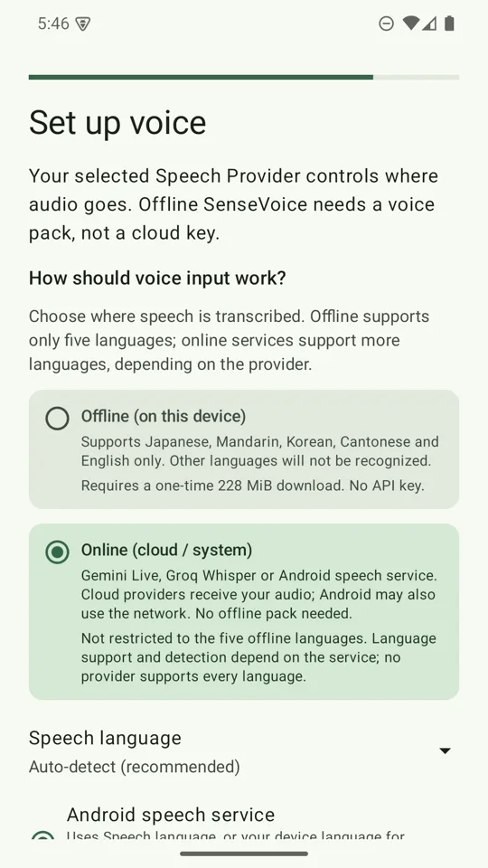
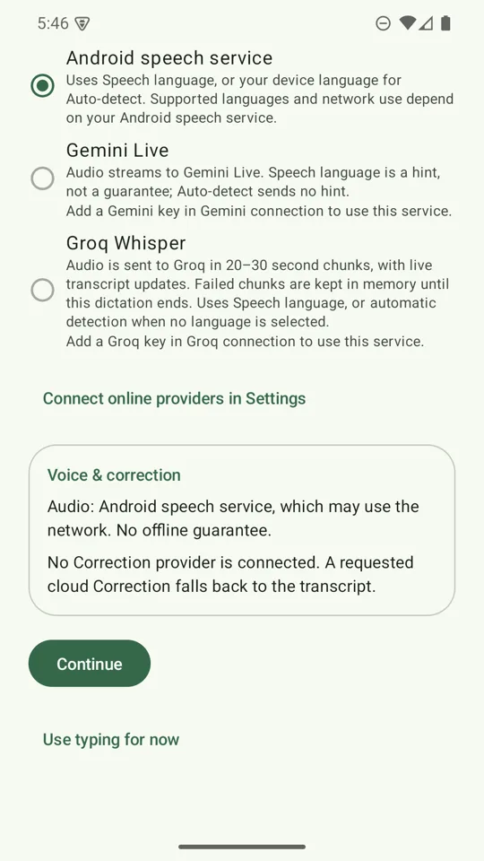
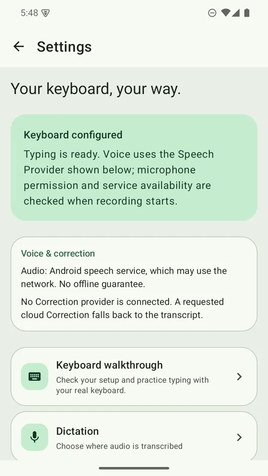

You do not need an API key or a download to start. Typing, Japanese and Chinese typing, and the Android speech service all work out of the box. Add a key or the offline voice pack whenever you want more.
1. Install and open the app
Install AI Keyboard from Google Play and open it. It needs Android 8.0 or newer on a 64-bit ARM (arm64) phone, which covers nearly every phone sold in recent years.
New installs get the green Sprout look automatically. You can switch to the Classic look any time under Settings → Typing & feel → Keyboard style.
2. Follow the walkthrough
- Enable AI KeyboardTap the button in the walkthrough. Android opens its on-screen keyboard list, where you switch AI Keyboard on. Android shows a standard warning that any keyboard can see what you type; this is shown for every third-party keyboard.
- Choose AI KeyboardBack in the app, tap the choose button. Android shows its keyboard picker; select AI Keyboard. You can open the same picker later from any text box with the keyboard-switcher icon Android shows near the bottom of the screen while a keyboard is open.
- Pick your home layoutChoose Voice home for a big microphone with one Keyboard button, or Keyboard home to start on the keys. You can change it later in Settings → Dictation → Use voice as home.
- Choose how you will dictate (optional)Offline, Online, or typing only. See below. Setup saves a choice only when you make one, and never turns AI cleanup on by itself.
- Try your keyboardPractise in a real text box using the actual keyboard, then tap I tried typing. Practice is optional. Nothing you type there is saved in Settings, and no AI connection is needed.





Once the keyboard is enabled and selected you can also tap Use typing for now to skip voice and AI and start typing straight away.
You can reopen the checklist and practice box any time from Settings → Keyboard walkthrough.
3. Choose how to dictate
You can do this during setup or later in Settings → Dictation → Speech provider.



| Choice | Needs a key? | Where audio goes |
|---|---|---|
| Offline (SenseVoice) | No. One-time download of about 228 MiB. | Stays on your phone. |
| Android speech service | No | Handled by your phone's own speech service, which may use the network. |
| Groq Whisper | Yes, a Groq key | Sent directly to Groq. |
| Gemini Live | Yes, a Gemini key | Streamed directly to Google. |
Offline dictation supports Japanese, Mandarin, Korean, Cantonese and English only. Online dictation has one Speech language setting that works across Android, Groq Whisper and Gemini Live. Auto-detect is the default.
New installs do not force the offline download. Start with Android speech or a cloud key, and add the offline pack later if you want it.
4. Add an AI provider (optional)
A key is needed for cloud dictation and for cloud writing styles. Get one in a couple of minutes:
- Get a Groq API key (Whisper speech and fast text rewriting)
- Get a Gemini API key (Gemini Live speech and text rewriting)
Paste it into Settings → Cloud & privacy (the Groq or Gemini connection page). Then pick who rewrites your text under Settings → AI cleanup: Gemini, Groq, or the on-device model. The keyboard uses whichever provider actually has a key if your saved choice has none.

5. Turn on Japanese and Chinese typing (optional)
Settings → Languages → Typing languages → Add Japanese and Chinese, then tap the globe key beside the space bar to cycle between your typing languages. Details are in How to use.
If something does not work
- The keyboard does not appear. Open Settings → Help & About → Keyboard setup. It checks whether AI Keyboard is enabled and selected, and takes you to the right Android screen.
- The microphone does nothing. Android asks for microphone permission the first time you tap the mic. If you declined, Help & About → Troubleshooting takes you to the recovery steps.
- A message appears inside the keyboard. Provider not set up, a refused field, a cut-off reply, or a failed call each show their reason in the keyboard itself instead of an Android notification.
- More answers are in the FAQ, or send feedback.